THAN AL
36
Standard
Mathematics
2
Cleanliness competition is started for the houses of Valiyara Grama Panchayath. Raihan and Riya thought to get first prize in the competition. Raihan, Riya and their parents started cleaning the house.
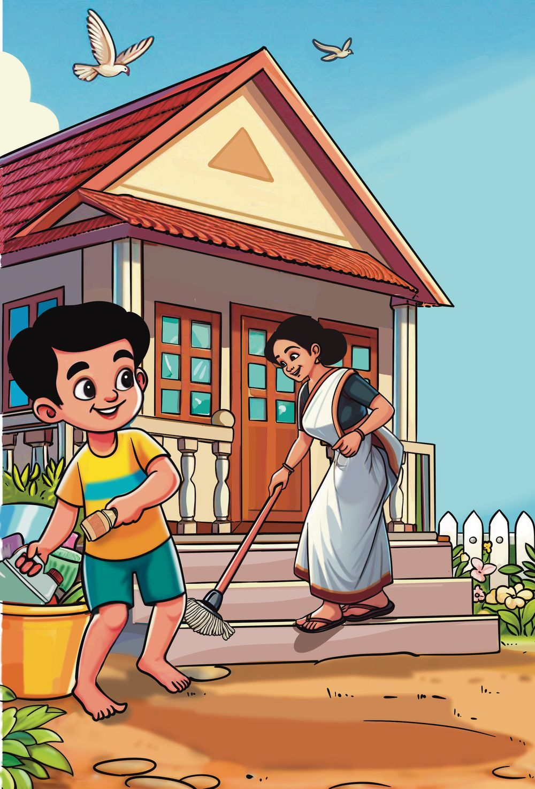

THAN AL
36
Standard
Mathematics
2
Cleanliness competition is started for the houses of Valiyara Grama Panchayath. Raihan and Riya thought to get first prize in the competition. Raihan, Riya and their parents started cleaning the house.
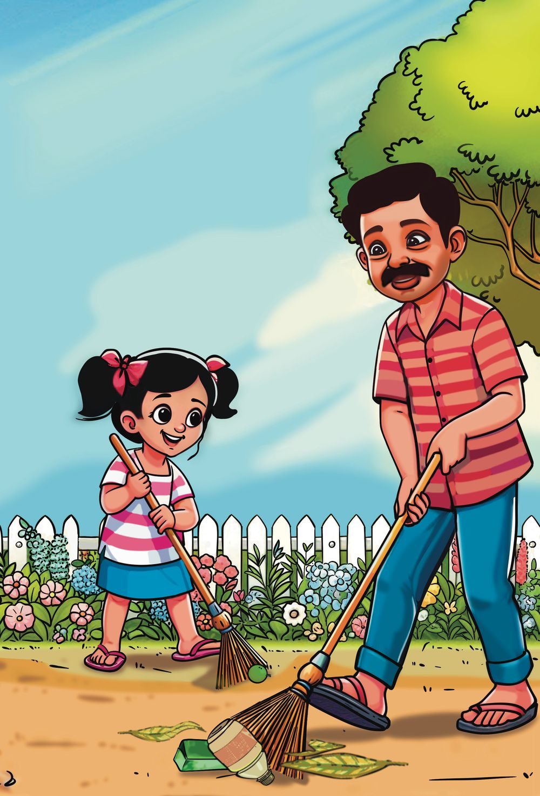


3 For a better tomorrow
Unit
3
For a better tomorrow
37


Raihan and Riya will come now. I am ready.
I’ll clean the veranda.
I’ll scoop up all garbage.
Valiyara Grama Panchayath Cleanliness Competition Dear, We have decided to make our Valiyara Grama Panchayath into a totally clean panchayath. All households and institutions should participate in this competition. Those who clean well will get prizes. All are requested to cooperate in this effort to make our place clean. With Regards, President, Valiyara Grama Panchayath. 38
Standard
Mathematics
2

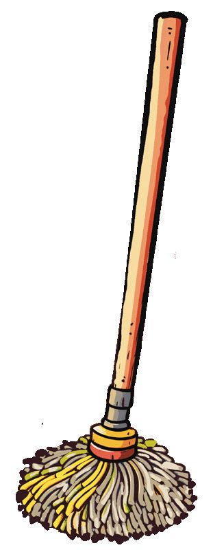


Let’s buy things.
We have to separate the plastic items and give them to Haritha Karmasena. See the price of materials they bought for cleaning. Minnu bought 2 bottles of lotion.
Price List Lotion
Rs. 20
Soap
Rs. 10
Mop
Rs. 60
Broom
Rs. 30
Aami bought 5 soaps.
What I calculated.
Rupees.
20 + 20 = 40 is 20 doubled.
When we add a number to itself we get double the number. How much is the price?
Rupees
How did you calculate it? Price of the mop: Rupees
+
= 3
Unit
Price of two brooms:
For a better tomorrow
39


House Visit Priya and Kavitha, members of the Haritha Karmasena are collecting garbage from houses.
We have to collect garbage from the houses 45 to 99.
45 46 47 48 49 50 51 52 53 54 55 56 57 We have done 45 to 57. How many houses did we do?
So only 58 to 99 are left. How many are left?
Write numbers from 58 to 99 in order.
58 59 60 61
69 70 71
99 40
Standard
Mathematics
2
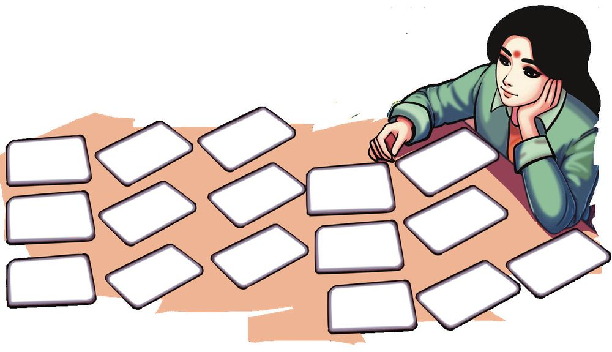


Kavitha is arranging the remaining stickers in order to paste them on the houses.
84
94
89
85
91
87
90
98
93
96
86
88 95 97
99
92
Then some of her friends came over. Each took a card and read it aloud.
84
93
Eighty Four
78
85
.....................................
Ninety Seven
Write in order. 84
Unit
3
For a better tomorrow
41


Number cards While cleaning the house, Raihan and Riya found a bag.
Oh! It’s full of number cards 8
9
There are red and blue.
50 1
3
40
80
60
2
4
70
5
7
6
They added the number on a red card and the number on a blue card and made new numbers. See those numbers.
57
81
68
79
47
Write the numbers from the smallest to the largest.
Now you can make numbers like this.
Write the numbers from the largest to the smallest.
42
Standard
Mathematics
2


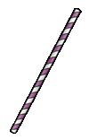
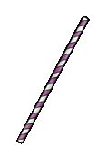

Like this add the numbers on the other cards and write them.
Ones and Tens Hygiene Club members made paper straws. They arranged the straws as bunches of ten and some loose ones. See how each has arranged the straws. Count and write. Sreesha
4 tens and 5 ones. 45 40 and 5
Anikha
.....tens 3 ones. ......and 3
Nandhu
.....tens.... ones. ...... and ......
Aarush
.....tens.... ones. ...... and ......
Write the numbers from the smallest to the largest.
Unit
3
For a better tomorrow
43
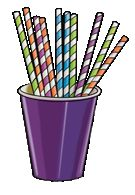


Putting together See the paper straws Advitha and Nandhu made.
How many paper straws did Advita make? How many paper straws did Nandhu make? What is the total number of straws they made? How I found?
How my friend found?
44
Standard
Mathematics
2
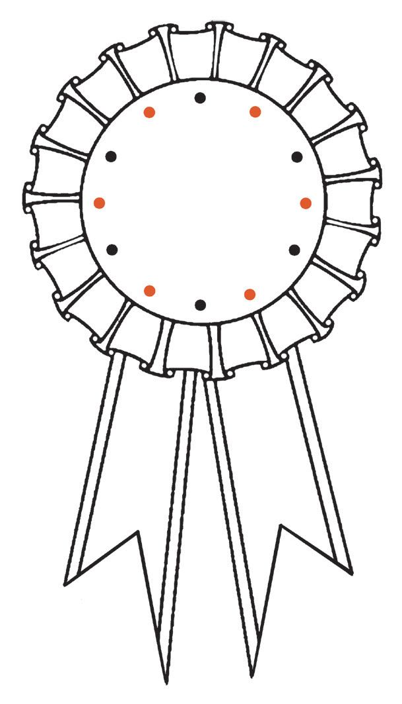


Let’s make badges. Members of the Hygiene Club made badges for them. Colour these badges.
Join the numbers on the badge in order and write them.
95
50 55
90
60
85
65
80
75 70
78
78 56 58 76 60 74
62 64 72 70 68 66
3
Unit
50
For a better tomorrow
45


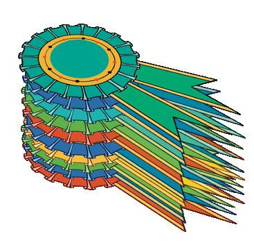
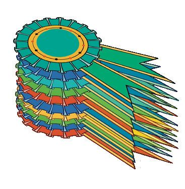
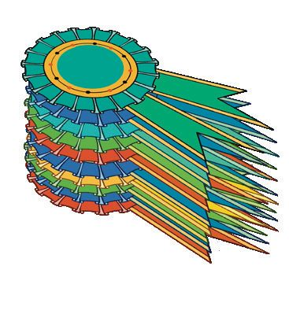
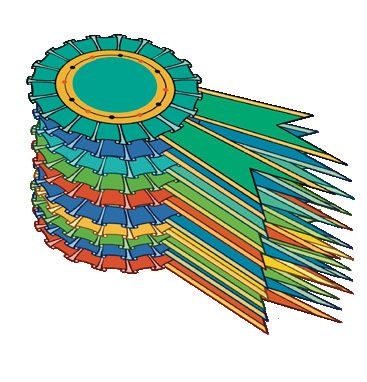

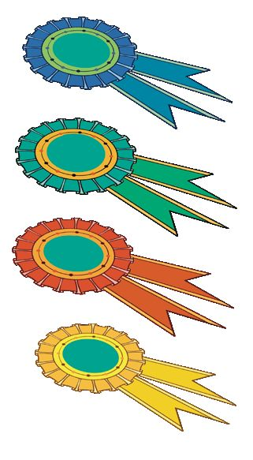

Sawan and his friends are arranging the badges. They arranged 50 badges.
They are counting the remaining badges.
50 and 1 is 51 51 and 1 is 52 50 + 1 = 51 51 + 1 = 52 52 + 1 = 53 53 + 1 = 54 ........................ ........................
Nivedh wrote like this.
........................ ........................
Safa wrote in another way.
50 + 1 = 51 50 + 2 = 52 50 + 3 = 53 50 + 4 = 54 ........................... ........................... ........................... ...........................
46
Standard
Mathematics
2


They arranged 60 badges. Each said 60 in different way. 6
59 and 1 together.
Tens.
50 + 10
50 + 5 + 5
61
10 less than 70
Bet
wee
n 59
and
Let’s write.
59
+1
10
m
or e
th
an
50
60
Unit
3
For a better tomorrow
47


Clean House See the list of 5 houses which got the highest marks in the clean house competition. Find the first 5 positions and write in table. House Name
Marks
Position
Neelambari
89
1
Sreepadham
68
2
Thanal
99
3
Athidhi
90
4
Meghamritham
71
5
House Name
Marks
How many marks did the first place get? How many more than the second place ? What is the difference in marks of first and third places? How many two- digit numbers are there in total?
48
Standard
Mathematics
2
The smallest number with two-digits is 10.
99 is the largest two-digit number, isn’t it?


Ameya’s house won the first place in the Clean House competition. Got 99 marks. If I got Everyone was happy. one more mark!
If she got one more mark what would it become?
99 and 1 99 + 1 = 100
9 tens and 9 ones is 99
10 + 10 + 10 + 10 + 10 + 10 + 10 + 10 + 10 + 10 .... + 10 Smallest three digit number
99+1
95+5
50+50
50 60
7 Tens 8 Tens
70 80
9 Tens 10 Tens 3
Unit
5 Tens 6 Tens
90 100 For a better tomorrow
49


Beyond 100
I have to leave when you come
May I join you
Ok! Come on!
1
101
0 0
Hundred and one
1 1
100+1
0 01
100 and 5 = 105
50
The next number after 100
101
0 0 4
1 1
0 04
100 + 9 = 109
100 + 1 = 101 101 + 1 = 102 102 + 1 = 103 103 + 1 = 104
100 + 1 = 101 100 + 2 = 102 100 + 3 = 103 100 + 4 = 104
.................................
.................................
.................................
.................................
.................................
.................................
.................................
.................................
.................................
.................................
.................................
.................................
Standard
Mathematics
2


What is 1 added to 109?
One Hundred and Ten
1 0 0
100 + 10 = 110
1 0
109 + 1 = 110
1 01 0 100 and 20 make 120. 100 and 30 make 130.
1 added to 109 and 10 added to 100 are equal to 110. 40 more than 100 is 140.
100 + 80 = 180 11 tens make 110
Unit
3
For a better tomorrow
51

Let’s write the numbers. We can write the number on the stickers.
Some numbers are not written. Can you write them?
101 102 103
105
107
110
111
119 122
124
128
130
137 146
150
What is the relation between the numbers in the coloured boxes?
Give yellow colour to five numbers which increase by 5. Did everyone colour the same numbers?
52
Standard
Mathematics
2


Write the missing numbers. 161
171
152 153
192 163
183 174
194
165
195
156
186 197
158 159
199 and 1 199 + 1 = 200
100 added to 100 is...
178 169
160
190
200
How do we add 190 and 10 ? Mom... please help me with this.
190 means 100 and 90. When 10 is also added, it is 100, 90 and 10. 100 + 90 + 10 It is 100 and 100. 100 + 100 = 200
3
Unit
151
For a better tomorrow
53


Write in order Aswini wrote the numbers in order. Find other numbers and write in order.
110 120 130 140 Can you tell , Sweety?
Now I will say in a different way.
100 + 10 = 110 110 + 10 = 120 120 + 10 = 130
100 + 10 = 110 100 + 20 = 120 100 + 30 = 130 100 + 40 = 140 100 + 50 = 150 100 + 60 = 160 ............................... ............................... ............................... 100 + 100 = 200
54
Standard
Mathematics
2
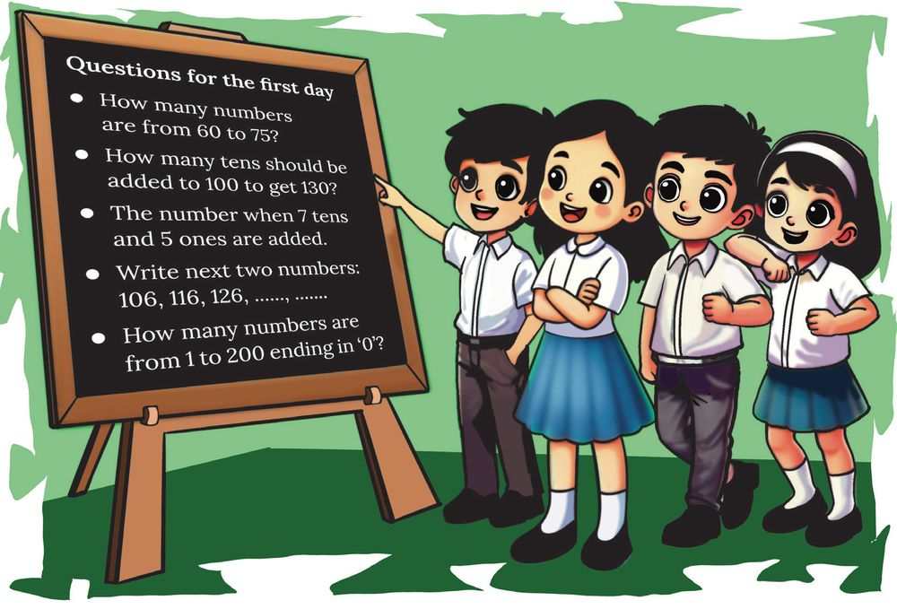

Math Quiz Nimisha and her friends read the quiz questions written on the math club notice board. Write the answers.
Find some more questions and write them down. Write the answers also.
Unit
3
For a better tomorrow
55